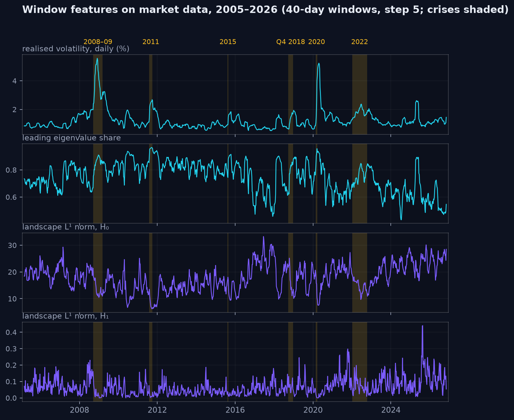

Use persistent homology over sliding windows of multi-asset returns to detect transitions between normal regime and market crises (2008, 2011, 2015, 2018, 2020, 2022), and test whether topological descriptors add anything beyond volatility and correlation on leakage-free folds.
Classical methods for detecting regime changes in finance (rolling volatility, rolling correlations, HMMs) look at statistical moments. Topological Data Analysis proposes a complementary angle: look at the shape of the return cloud in \(\mathbb{R}^d\) through persistent homology, extracting invariants that are robust to reparameterization.
Idea: in a normal regime, returns form a "round" low-correlation cloud; during a crisis, the cloud collapses toward a single direction (systemic co-movement) and its shape changes. Gidea & Katz (2018) found that the norms of persistence landscapes grow in the run-up to the 2000 and 2008 crashes. Much of that change is measured without topology: for independent Gaussian days, the persistence of a standardised window depends on its correlation matrix only through the eigenvalues.
The question here is narrower: do topological features detect crisis regimes better than realised volatility and the eigenvalues of the correlation matrix together — the two things a crisis also changes — when all are scored on the same leakage-free folds? The analysis plan was fixed before any result and is archived on Zenodo (version 0.1.2, doi:10.5281/zenodo.24356109).
Log returns:
Sliding window of \(h = 40\) days, each asset standardised inside it:
Vietoris-Rips persistent homology:
Landscape norms summed over all layers (Gidea & Katz, 2018), in dimensions 0 and 1:
Baselines: realised volatility and the eigenvalues of the correlation matrix \(C_t\):
Primary comparison, for each held-out crisis:
05-tda-finance/ ├── README.md # motivation, evaluation design, analysis plan, results ├── LICENSE ├── CITATION.cff ├── requirements.txt # the pinned environment of the plan ├── src/ │ ├── data.py # prices, log returns, crisis periods and labels │ ├── persistence.py # sliding windows, standardisation, Vietoris-Rips │ ├── features.py # landscapes, landscape norms, baselines │ ├── validation.py # purged walk-forward, leave-one-crisis-out │ └── classify.py # feature-set comparison on shared folds ├── scripts/ │ ├── run_plan.py # the analysis plan end to end │ ├── calibrate_plan.py # how often the criterion passes on synthetic data │ ├── post_result.py # analyses added after the first run on market data │ └── plot_features.py # the window features over time ├── figures/ # the features over time, crisis periods shaded ├── results/ # the run on market data, the analyses added after it, calibration summaries, one file per synthetic dataset └── tests/ # splits, labels, features, plan, leakage demonstration
Topology plus volatility and the correlation spectrum, against those baselines alone. For each held-out crisis, ΔAUC is averaged over 10 random-forest seeds and counts as a win only if it exceeds its spread across seeds.
Success: at least 4 of the 5 counted crises under leave-one-crisis-out and 3 of the 4 the walk-forward can score. Reported, not counted: average precision, three other controls for the topology, and the settings of Gidea & Katz (H1, windows of 50 and 100 days).
On synthetic crises that change only volatility and correlation, the criterion passed in 3 of 20 datasets (the first version's comparison: 8 of 20). In a positive control, with crises only in the tails, it passed in 7 of 20.
Crisis periods fixed in advance: 2008–09 · 2011 · 2015 · Q4 2018 · 2020 · 2022.
The analysis plan, version 0.1.2, run once on the frozen market data on 2026-11-19; the tests added after the result, declared in the code before they were computed; and the features over time.
| Held-out crisis (positive windows) | ΔAUC, leave one crisis out | ΔAUC, walk-forward |
|---|---|---|
| 2008–09 (24) | +0.041 ± 0.055 | not scorable |
| 2011 (9) | +0.078 ± 0.009 | +0.012 ± 0.013 |
| 2015 (2, not counted) | +0.017 ± 0.047 | −0.002 ± 0.090 |
| Q4 2018 (13) | −0.045 ± 0.022 | +0.058 ± 0.042 |
| 2020 (5) | +0.029 ± 0.035 | +0.042 ± 0.025 |
| 2022 (39) | +0.043 ± 0.017 | +0.042 ± 0.021 |
| Wins | 2 of 5 (4 needed) | 3 of 4 (3 needed) |
ΔAUC is the ROC-AUC of topology plus volatility and the correlation spectrum minus that of the two baselines alone, mean ± standard deviation over 10 random-forest seeds; highlighted, a win (mean above the spread). Inside the held-out blocks the classes barely separate: under leave-one-crisis-out the combined model reaches a ROC-AUC of 0.49–0.61 in every counted crisis but 2011 (0.99), below volatility alone (0.55–0.71) in those four. Reported, not counted: three other controls for the topology, logistic regression in place of the forest and the settings of Gidea & Katz; none meets the criterion. Under leave-one-crisis-out the alarm rule of the plan warns before the drawdown minimum in one counted crisis with the combined model (2022, 80 trading days ahead), as with the baselines alone, and in three with volatility alone.

scripts/plot_features.py; drawn after the result, descriptive). The dimension-0 norm falls in most crises, mirroring the rise of the leading eigenvalue share, as the dependence of persistence on the correlation spectrum predicts.The criterion had almost no power where it matters: on heavy-tailed synthetic crises, which change volatility, correlation and the tails at once, it passed in 0 of 20 datasets. An external review of the plan, written before it saw the result, proposed tests that measure what the market data can and cannot say. They were declared in the code (scripts/post_result.py) and pushed before any of them was computed, and they do not change the verdict.
| Statistic (scheme) | Power, heavy-tailed crises | Market p | Holm-adjusted |
|---|---|---|---|
| Decrease in log-loss (leave one crisis out) | 5 / 20 | 0.35 | 1.00 |
| Decrease in Brier score (leave one crisis out) | 5 / 20 | 0.96 | 1.00 |
| Decrease in log-loss (walk-forward) | 7 / 20 | 0.24 | 0.96 |
| ΔAUC on volatility-matched pairs (walk-forward) | 4 / 20 | 0.48 | 1.00 |
Each statistic is tested against 99 synthetic null datasets (Monte Carlo test, Barnard 1963), and its power is the share of synthetic crisis datasets it detects at the 5% level. The reading, fixed before any statistic was computed on market data, counts the primary comparison and the statistics whose power on heavy-tailed crises exceeds the nominal size of 0.05 by an exact binomial test, with Holm's correction: the four above. They give no evidence that topology adds to the baselines, and with power of 4 to 7 in 20 (the reading as a whole: 7 of 20 heavy-tailed datasets, computed after the market data) the absence of evidence says little. Every p-value at or below 0.05 belongs to a statistic or comparison outside that family and counts for nothing: ΔAUC itself (0.02 and 0.01, with power 3 and 1 in 20), the comparison with Mardia's kurtosis on both sides (0.01–0.04) and four statistics in the settings of Gidea & Katz (0.048, the smallest p-value 20 null datasets allow). The null is synthetic and separates its crises far more easily than the market does (ROC-AUC 0.96–0.99 for the fraction of crisis days in a window, against 0.49–0.61 for the combined model on market data), so a small p-value says that the market is unusual for those datasets, not why. Every table is in the README.